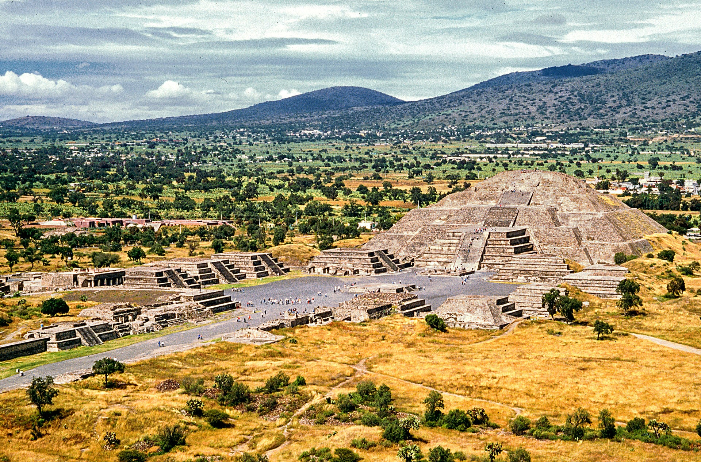
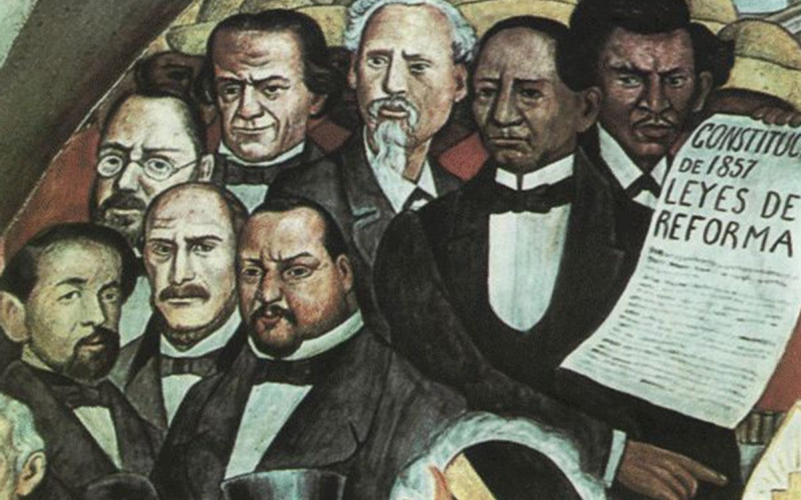
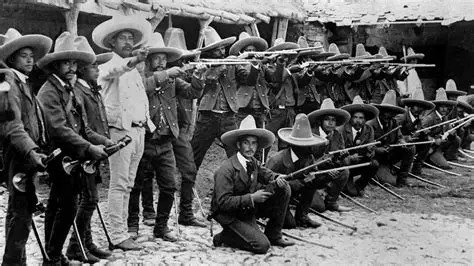

Un recorrido por sus orígenes, transformaciones y legado
Antes de la llegada de los españoles, en el territorio que hoy conocemos como México florecieron grandes civilizaciones: los olmecas, mayas, zapotecas, teotihuacanos y mexicas, entre otros. Desarrollaron sistemas de escritura, astronomía, arquitectura y agricultura avanzada.

Teotihuacán y Tenochtitlan fueron dos de las ciudades más grandes e importantes de América en su tiempo. Su legado se mantiene presente en la cultura, el idioma y las tradiciones actuales.
En 1519 arribaron los expedicionarios españoles liderados por Hernán Cortés. Tras años de enfrentamientos y alianzas con pueblos indígenas, se consumó la caída de Tenochtitlan en 1521. Comenzó así un periodo de casi 300 años bajo el dominio del Imperio Español.
Durante esta etapa se mezclaron culturas, lenguas, religiones y tradiciones, dando origen a la identidad mestiza que caracteriza al país. Se fundaron ciudades, se construyeron catedrales y se estableció una nueva organización social y económica.
La lucha por la independencia comenzó el 16 de septiembre de 1810 con el llamado a levantarse en armas por parte del sacerdote Miguel Hidalgo y Costilla, en el pueblo de Dolores. Tras 11 años de guerra, en 1821 se firmaron los Tratados de Córdoba, consumando la independencia.
Figuras como José María Morelos, Vicente Guerrero y Agustín de Iturbide fueron protagonistas clave de este proceso histórico que dio paso a la creación de la nación mexicana.
Una vez independiente, México atravesó años de gran inestabilidad política y económica. Hubo conflictos internos, guerras con otros países, la pérdida de más de la mitad de su territorio en 1848 y la intervención francesa que llevó a la instauración del Segundo Imperio Mexicano.

Finalmente, con la restauración de la República en 1867 y el gobierno de Porfirio Díaz, se inició una etapa de orden y crecimiento, aunque con fuertes desigualdades sociales.
En 1910 estalló la Revolución Mexicana, un movimiento social y armado que buscaba poner fin a la dictadura de Porfirio Díaz y lograr justicia social, reparto de tierras y mejores condiciones de vida para el pueblo.

Liderada por figuras como Francisco I. Madero, Emiliano Zapata y Pancho Villa, este movimiento transformó profundamente al país. Su mayor logro fue la promulgación de la Constitución de 1917, que sigue vigente hoy en día.
En la actualidad, México es una república federal compuesta por 32 entidades. Cuenta con una gran riqueza cultural, natural y humana, reconocida mundialmente por su gastronomía, sus tradiciones, su música y su historia.
Es una de las economías más importantes de América Latina y sigue construyendo su futuro sobre la base de su vasta herencia histórica y la diversidad de su gente.
Mi meta es adquirir conocimientos sólidos, desarrollar habilidades prácticas y prepararme para enfrentar retos profesionales en el futuro. Me gusta trabajar en equipo, aprender cosas nuevas y mejorar cada día.